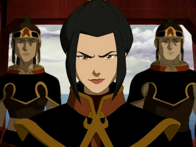

The Avatar has been confirmed to be alive along with his trouble making gang of hoolagins. Notorius for causing immense amount of property damage to the fire nation, that dastardly Avater and his pals are back at it again. Thought to have been killed by the now once again disgraced Prince Zuko, the Avartar once again eludes us. After failing to seige the Fire Nation Capitol, The Avatar, his friends, and Prince Zuko are now all missing and wanted by the government.
After only recently returning from his banisment, Prince Zuko again disgaces his father, himself, and his nation. Rumours have spread that he has gone to join the Avatar in his pursuit to kill our wonderful ruler. The Trator was recently captuerd at the Boiling Rock Prison but managed to escape with multiple other prisoners. This tratoris man is to be brought to the Fire Lord at once is found.
^ brought in on sight >:(
Princes Azula our beloved Princess has recently seemed to be on a warpath for her brother, the banished Zuko. The Princes was reported to have been present for the situation at Boiling Rock, where her two best friends and right hands turned on her and where consiquently locked away. This has seemed to overenraged the Princess, who is now leading more ferociously than ever. (Citizens beware, and be respectful to the Princess.)
^ she kinda scarry :(
Brother of the Fire Lord, Iroh, Dragon of the West has escaped his prison and is on the loose! It is reported that on the day of black sun the infamous war general escaped his cell and fought his way out of the prison with little struggle- without the use of firebending!! Citizens are warned to be on high alert, as this dangerous mans whereabouts are still unknown. As well as Zuko, This Trator is to be brought to the Fire Lord at once is captured! Or- reported if seen- don't get too close- be careful.
^ He may look very friendly but he's very dangerous- be caoutious -_-
© 2024 Intro to HTML project sit